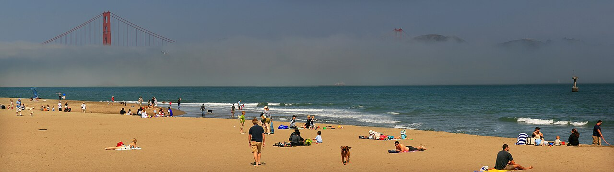

Relevant
Snowball Lab (TinyML) · Hack The Future · Columbia SHAPE alum
CS + Math @ Purdue · Open to SWE & AI internshipsCS + Math at Purdue · open to SWE and AI internships
Building at the intersection of AI, systems, and real-world problems. Researching TinyML at Purdue's Snowball Lab.I build brain-computer interfaces, computer vision, and ML small enough for a microcontroller. Researching TinyML at Purdue.
Same site, twelve designsDesigns
Tap one to restyle the whole pageRestyle the whole page "12 ways" stripSelected work
Brain-computer interfaces, computer vision, applied ML and the occasional tool for a non-profit.Brain-computer interfaces, computer vision and applied ML
Pick a tool to see where I've used it
Stack Map filters the cards belowWhere I've worked
Studying
Relevant
Snowball Lab (TinyML) · Hack The Future · Columbia SHAPE alum
Contact
I'm always interested in software engineering, AI, startups, research and ambitious technical projects.Internships, research positions, or a project that needs another engineer
The fun part
Live status, games you can beat me at, and how this site works under the hood.Status, records, games, and how this site works
Right now

Currently in
San Francisco, CA
--:-- PT · day
Fred Longshaw, 1927
Drag the record to scratch
Embedded from rithvik.si
Small games I built. Each one compares your score against mine.Small games, scored against mine. More live on rithvik.si ↗
Each game is an iframe from <game>.rithvik.si; it restyles to match the active designThis site, as a project
Same maths in every design: drawn as dots here, as characters in ASCII Terminal. Capped at 24 fps and paused off-screen.
Things I care about
This site comes in 12 designs.Twelve designs, one site
Hover the dial, scroll through it, or press T to shuffle.
First-visit coach markSynced from Google Docs · 2 hours ago
West Lafayette, Indiana · rithvikpkx@gmail.com
Official Home Page
If you have any comments about this page, you can email them to the address above. However, due to the limited number of personnel in this office, it may take a day or two to reply.
Legal Disclaimer · Copyright © 2026 Rithvik Praveen Kumar
Sample data for the mockup · last 7 days